Toltec Pro
Мониторинг энергетических уровней
Вход в намерение
Общее время
0 мин
Сны (ОС)
0
Ранг созерцателя
Новичок
Уровень практика
Воин
Динамика осознания
Журнал сессий
00:00:00
Нажмите "Старт" для начала
Ч1: 00:00
Ч2: 22:00
Ч3: 44:00
Музыкальный Хаб
Photosynthesis
Loss Aversion
42
Благодать и выход в нагваль.
Энергетические Уровни Сознания: Карта Внутренней Трансформации.
Путь воина сопровождается прохождением через ряд качественно различных энергетических состояний, каждое из которых знаменует новый этап в трансформации осознания. Эти состояния, часто именуемые «уровнями благодати», служат не только индикаторами накопленной личной силы, но и маркерами глубинной перестройки всего энергетического существа практикующего.
Не То ни Сё.
Первый уровень, который начинает фиксировать практик, можно описать как состояние «все так, да не совсем». Это не драматический прорыв, а скорее тонкая, едва уловимая корректировка обыденного сознания. На этом этапе происходит не активное накопление силы, а скорее прекращение ее мелких, но постоянных утечек.
Практик начинает замечать слабый, но стабильный энергетический фон — нечто, что сложно назвать сильным изменением, но что привносит в самоощущение несомненную правильность. Это ощущение внутренней цельности, собранности и бодрости. Физическое тело может чувствовать себя немного легче, реакции становятся чуть более четкими, а ум — несколько менее хаотичным.
Основная характеристика и сложность этого уровня в его хрупкости для восприятия. Ощущение заметно лишь тому, кто о нем знает и кто намеренно фиксирует его присутствие. Стоит лишь забыться, увлекшись повседневными делами, как оно будто бы «изчезает». На самом деле, оно не пропадает, а просто тонет в более грубых и привычных ощущениях, поскольку его уровень пока слишком мал, чтобы постоянно доминировать в поле внимания. Это первая, самая тонкая победа осознания над автоматизмами быта.
Благодать.
Второй уровень характеризуется явным и устойчивым самоощущением радости и счастья, а также исключительного физического самочувствия. В теле ощущается подлинная легкость — не просто отсутствие тяжести, а чувство, будто гравитация теряет свою власть. Движения происходят словно сами по себе, без малейших внутренних усилий, как по команде, которую тело предугадывает и исполняет быстрее, чем она отдается. Возникает парадоксальное ощущение: ты формируешь намерение, а тело его выполняет, но при этом все происходит как бы само собой, а ты остаешься внутри наблюдателем этого идеального процесса.
В этом состоянии человека внутренне самодостаточен и счастлив без всяких видимых причин. Про такое состояние можно сказать, что человек «в духе». По сути, это качественно иное, но при этом самое естественное и правильное состояние для человека, его энергетический эталон. Ощущается как возвращение домой, к своей изначальной природе, не искаженной социальными напряжениями и внутренним диалогом.
Уровень начальной благодати представляет собой первый ощутимый прорыв за пределы обыденности. Это состояние повышенной чувствительности и внутренней гармонии, когда практикующий начинает непосредственно ощущать течение энергии в своем теле, замечать тонкие вибрации окружающего пространства и улавливать первые проблески работы Намерения в виде незначительных синхронистичностей. Достижение этого уровня возможно через строгую дисциплину, такую как сохранение сексуальной энергии, систематическая практика остановки внутреннего диалога или продолжительное пребывание в «местах силы». При последовательном подходе переход на этот уровень может произойти в течение нескольких недель или месяцев целенаправленной практики.
И все же — это не предел, а великолепная платформа, с которой открывается путь дальше.
Эйфория.
Третий уровень — это качественно иной режим бытия, характеризующийся чрезвычайно высоким энергетическим самовосприятием. Переживаемый здесь экстаз по своей интенсивности и чистоте сопоставим с эффектом самых изысканных наркотиков, но при этом является абсолютно органичным и управляемым состоянием. Его значение настолько глобально, что его трудно переоценить.
Тело пребывает в особом виде — суть которого заключается в прямом восприятии энергии. Человек буквально видит, что его физическая оболочка состоит из бесчисленного множества сияющих точек, каждая из которых является резервуаром и преобразователем силы. Это не метафора, а прямое видение своей нейронной активности как единого поля чистого намерения и осознания. По сути, ты обретаешь способность полностью видеть свой мозг как инструмент — как максимально включенное, работающее на пределе своих возможностей намерение.
Это полное и абсолютное воссоединение с самим собой, фундаментальная смена перспективы. Смещение происходит не просто к «я — тело», как это было отчасти на предыдущей стадии, а к тотальному отождествлению: «я — это каждая клетка моего тела». Ты становишься этим миллиардом сияющих точек одновременно.
Внутри этой живой сети энергия свободно перетекает, накапливается и трансформируется. Каждая точка-клетка работает как крошечный трансформатор. Ты становишься миллиардом этих трансформаторов, единой и сложной энергетической динамической системой, наблюдающей саму себя изнутри. Это откровение о собственной истинной природе.
Состояние интенсивной эйфории знаменует собой этап, когда поток жизненной силы становится настолько мощным и устойчивым, что порождает постоянное чувство внутреннего восторга и полноты бытия. На этом уровне восприятие реальности начинает заметно меняться; мир перестает быть инертной декорацией и становится живым, одушевленным партнером по диалогу. Синхронистичности учащаются и становятся более явными, а практикующий обретает способность «заказывать» у мира определенные события или встречи, просто удерживая в уме четкое намерение, подкрепленное энергией безупречности.
Световой мозг.
Четвертый уровень — это состояние благодатной силы, интенсивность которого на порядок превышает все предыдущие переживания. Здесь восприятие делает новый виток: фокус смещается на точки, сосредоточенные в голове. Конкретно те из них, что формируют мозг, начинают излучать мощный, сконцентрированный свет.
Индивидуальные сияющие точки сливаются воедино, и возникает феномен, который можно назвать световым мозгом. Это не метафора, а прямое видение своей нейронной активности как единого поля чистого намерения и осознания. По сути, ты обретаешь способность полностью видеть свой мозг как инструмент — как максимально включенное, работающее на пределе своих возможностей намерение.
Чтобы понять отличие этого уровня от предыдущего, нужно уловить разницу в самой природе видения. На стадии клеточного осознания видны сами клетки и энергия, текущая сквозь них. Там есть структура, есть границы — можно различить стенки клеток, увидеть ширину энергетических потоков, проследить их направление. Пространство неоднородно, оно имеет фактуру. В световом мозге все иначе: границы исчезают. Нет промежутков между стенками, нет разделения на потоки и то, по чему они текут. Все пространство просто залито энергией. Это состояние тотальной засветки, где интенсивность настолько высока, что структура растворяется в сиянии.
Этот «сканер» не анализирует статичную картинку, а в реальном времени наблюдает за рождением намерений, решений и состояний прямо в их энергетическом зародьше. В рамках самоощущения это вызывает качественно иное переживание — постоянный, самоподдерживающийся, бесконечный экстаз. Это не всплеск эмоций, а ровное, ничем не омраченное сияние бытия, источником которого является твое собственное, теперь видимое, сознание.
Этот режим сканирующего сознания, дополительно условно названый как «сканер мозга» характеризуется радикальным расширением перцептивных способностей. Сознание практикующего начинает функционировать в режиме, сходном со сверхчувственным восприятием, обретая способность считывать информацию непосредственно из энергетического поля людей, событий и мест. На этом уровне стираются привычные границы между внутренним и внешним; мысль и реальность начинают взаимодействовать напрямую, без посредничества органов чувств. Практикующий может предвосхищать события, понимать скрытые мотивы людей и получать доступ к знаниям, не имеющим очевидного источника в его личном опыте. Однако для него все эти вещи обретают иную форму, отличную от общего понимания. Это не информация в привычном смысле — не слова, не образы, не логические цепочки. Это чистое схватывание сути, знание, которое приходит сразу целостным актом, минуя любые интерпретации.
Тело света.
Пятый уровень проявляется как тотальное преображение всего энергетического тела. Феноменологически это переживается как зажигание всего тела изнутри или снаружи. Важно различать два варианта этого процесса засвечивания.
Первый вариант — «столб бога». Ключевым элементом этого состояния становится прямое видение главного энергетического потока — мощного канала шириной с голову, нисходящего с неба и входящего прямо в теменную область. Этот поток заливает тело чистой, концентрированной силой, которая распространяется и заполняет его, как резервуар. Процесс здесь имеет четкую вертикальную структуру, направление сверху вниз, иерархию источника и приемника.
Второй вариант — спонтанное расширение света. Здесь нет нисходящего потока, нет «столба». Свет просто начинает расширяться от области головы, либо засвеченные области возникают хаотично в разных частях тела, независимо друг от друга. Эти очаги могут появляться где угодно — в груди, в конечностях, в центре корпуса — и, разрастаясь, постепенно сливаются в общую световую массу. Процесс идет не сверху вниз, а изнутри наружу, из случайных точек в целостность.
Однако важно понимать, что оба варианта — по сути, одно и то же. Сама энергия засвеченности не является предметом вливания извне или распространения откуда-то. Это всего лишь переход к видению того, что уже существует всегда. Столб энергии есть у каждого, независимо от того, видит его практикующий или нет. Разница лишь в ракурсе восприятия: можно видеть этот нисходящий поток, а можно его не замечать, фокусируясь на расширении света изнутри. Но сам поток от этого не исчезает и не появляется — он просто либо попадает в поле видения, либо остается за его пределами.
Независимо от варианта, энергия наполняет каждую клетку до такой степени, что индивидуальные точки, достигнув максимальной насыщенности, сливаются в единое, непрерывное световое поле. Процесс заполнения аналогичен слиянию точек в мозгу на предыдущем уровне, но теперь он охватывает всю физическую оболочку.
После полного заполнения тела происходит уникальный феномен: внутренняя энергия начинает излучаться вовне через глаза. Глаза становятся подобны окнам ночью — свет, не встречая преград, выходит наружу, буквально освещая внешний мир этим энергетическим сиянием, как мощные фары.
На этой стадии происходит окончательное видение матрицы человека — восприятие его как голографической энергетической структуры. Мир для практикующего останавливается, открывая свою пластичную, управляемую природу. Это открывает возможность для прямого, волевого манипулирования реальностью согласно собственному намерению, где воля, подкрепленная этим беспрецедентным уровнем силы, становится инструментом творения.
Абсолютное состояние единства представляет собой кульминацию энергетической трансформации — пиковое переживание, в котором индивидуальное сознание полностью растворяется в безличном океане Намерения. Это уровень тотального присутствия и всеведения, где исчезают последние следы дуальности, разделения на субъект и объект, на «я» и «мир». Практикующий переживает себя как чистую, ничем не ограниченную осознанность, как само Намерение, творящее реальность. Это состояние является одновременно и целью пути, и его вечным источником, точкой отсчета, из которой все проистекает и в которую все возвращается.
Распад светового тела.
Шестой уровень знаменует собой первую стадию выхода в нагваль. Он характеризуется началом контролируемого процесса распада единого светового тела. Ранее слившееся в однородное поле сияние теперь начинает дробиться — точки, его составляющие, отдаляются друг от друга, отлетая на некоторое расстояние.
Этот процесс может начинаться в любой части тела, с любой скоростью и в любом количестве очагов одновременно. Ключевая особенность — управляемость: усилием намерения практик может как позволить себе рассыпаться, так и вновь собраться в целостную форму.
Внешняя реальность отражает внутреннее состояние: она также подвергается аналогичному распаду. Мир расходится по швам, обнажая темные, пустотные промежутки между своими элементами — проявления изначальной пустоты, Нагваля.
Выход в нагваль.
Седьмой уровень — это полное завершение процесса. Световое тело окончательно рассыпается на бесчисленное множество отдельных, не соприкасающихся точек-осознаний. Возникает фундаментальный парадокс: на уровне восприятия каждая точка изолирована, однако на уровне единого, нераздельного сознания они все остаются связанными. Невозможно выразить это словами, но в реальности переживания это так — вы одновременно являетесь и каждой отдельной точкой, и целым, их объединяющим. Это состояние чистой осознанности, существующей вне формы, за пределами индивидуального «я».
Динамика уровней.
Важно понимать, что это не только уровни постоянного смещения, некие пороги достижения, на которых воин пребывает неотлучно. Отчасти это так, но лишь до определенной границы. Верхние уровни этой шкалы — начиная с четвертого и выше — являются отдельными состояниями, которые возникают только при всплеске намерения и наличии достаточной энергии. Они не являются постоянными уровнями пребывания.
Воин культивирует свое обычное, фоновое состояние в промежутке между вторым и третьим уровнями — между Благодатью и Эйфорией. Это его рабочая зона, его базовое самоощущение, из которого он действует в мире. И только при необходимости, когда требует задача или когда намерение достигает пика, он активирует высокие уровни.
Так, находясь на уровнях Благодати и Эйфории, воин может иногда впадать в состояние засвечивания мозга в моменты интенсивного осознания чего-либо. Это может происходить по несколько раз на день, но длится такое состояние лишь секунды — краткие вспышки, подобные озарениям, которые, однако, оставляют глубокий след и меняют саму ткань восприятия.
Схемы и визуализации
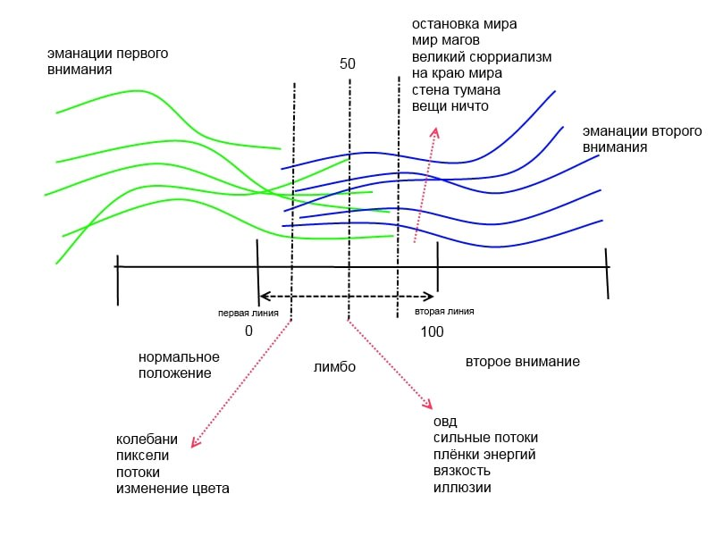
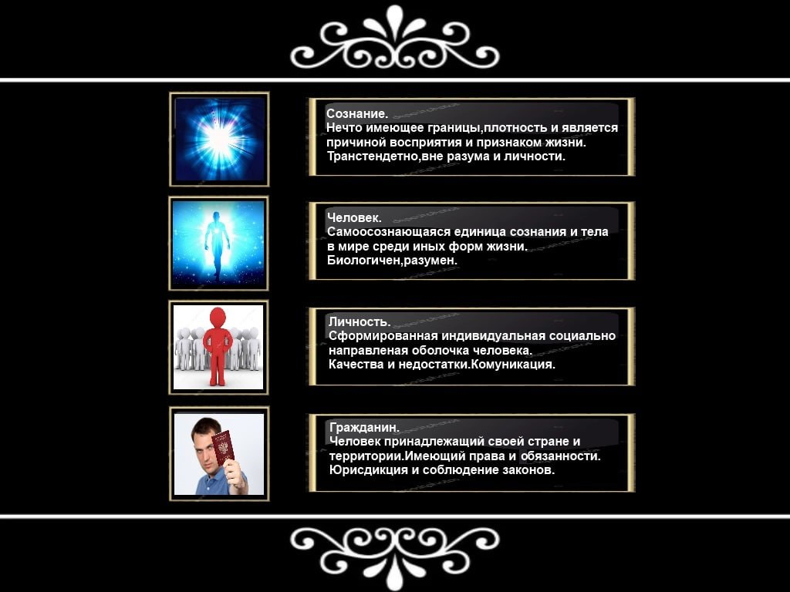
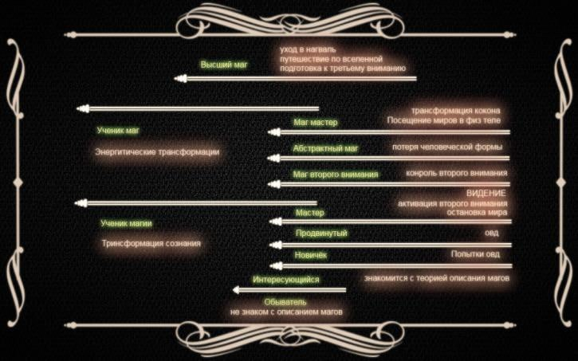


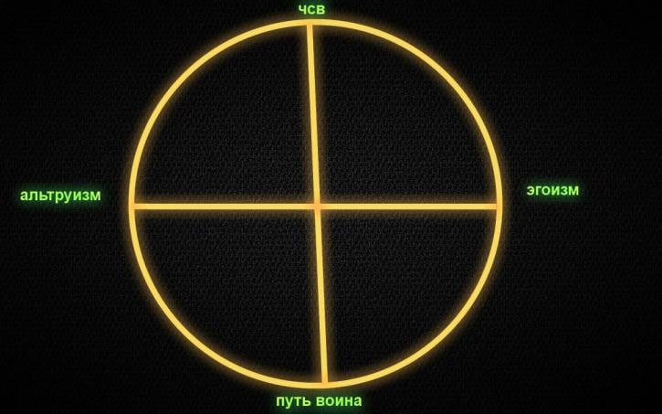

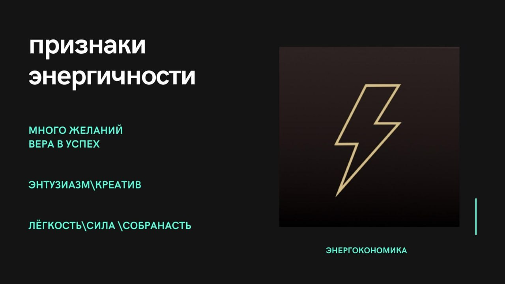

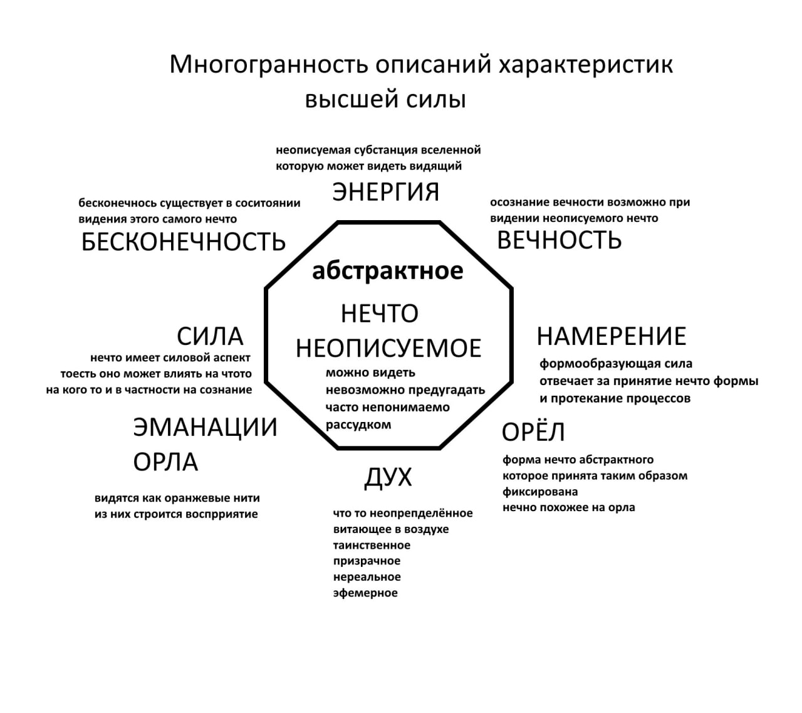

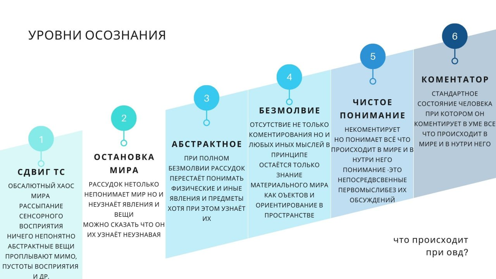
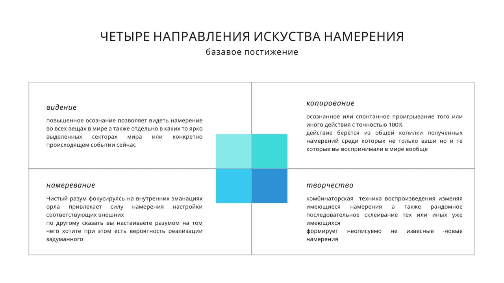

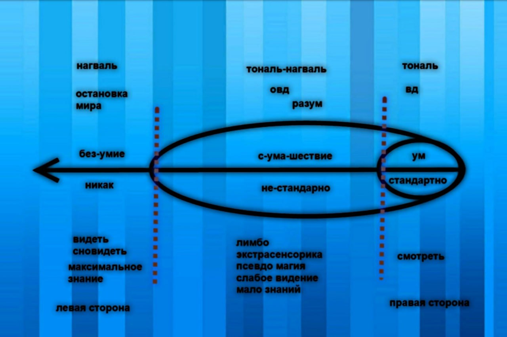

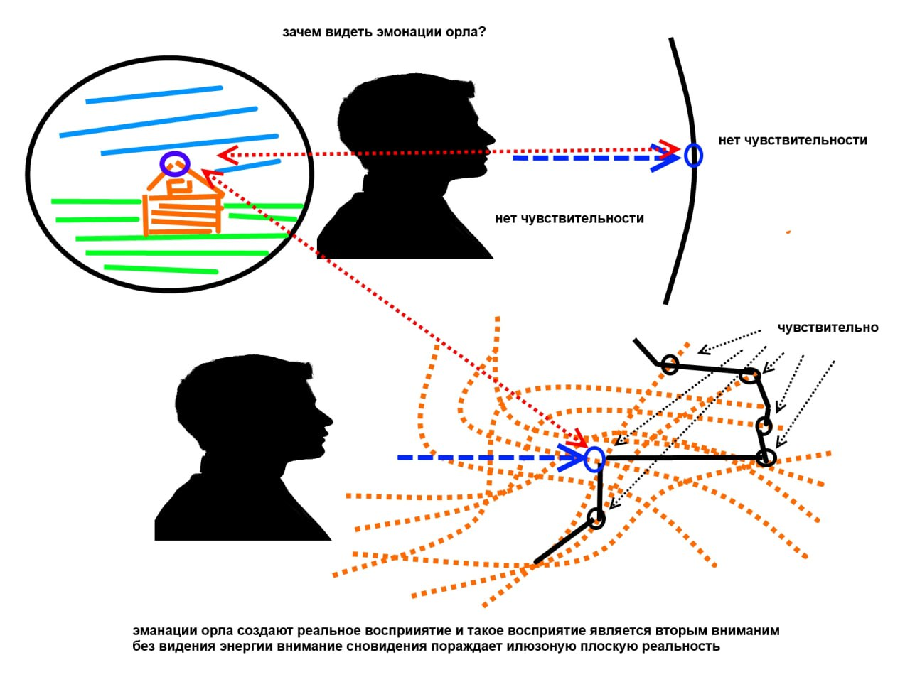


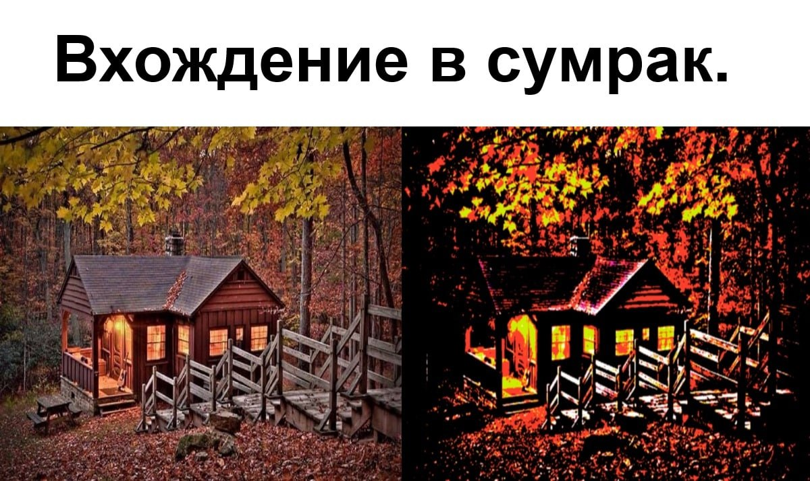
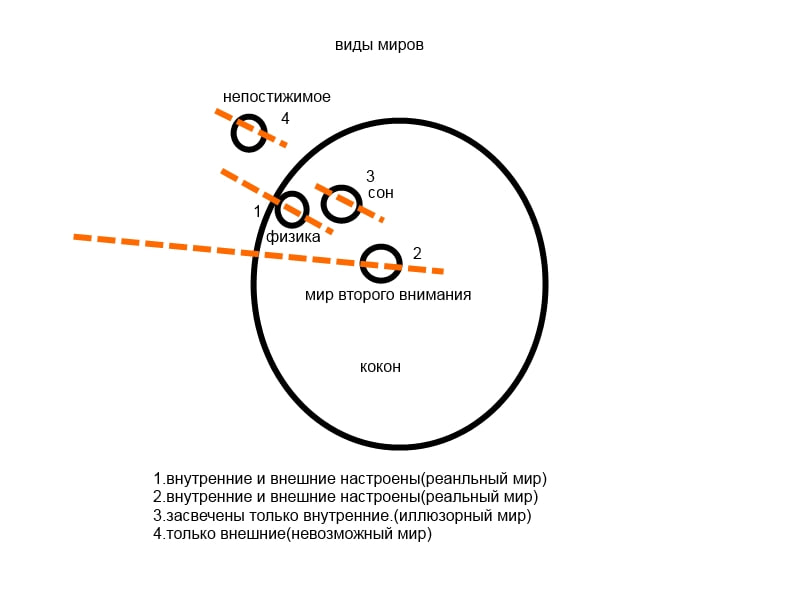
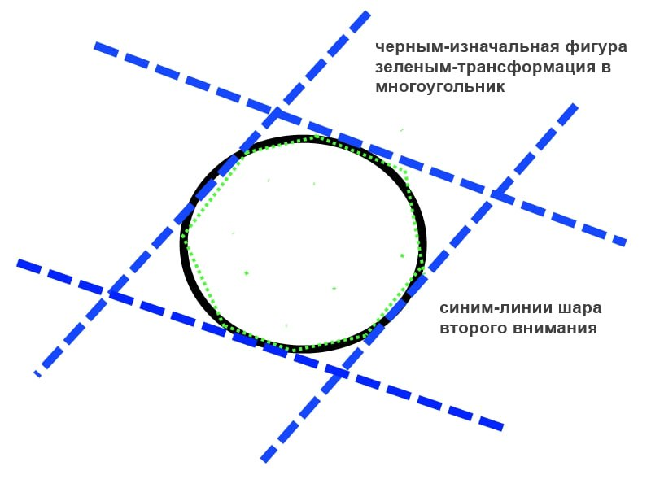

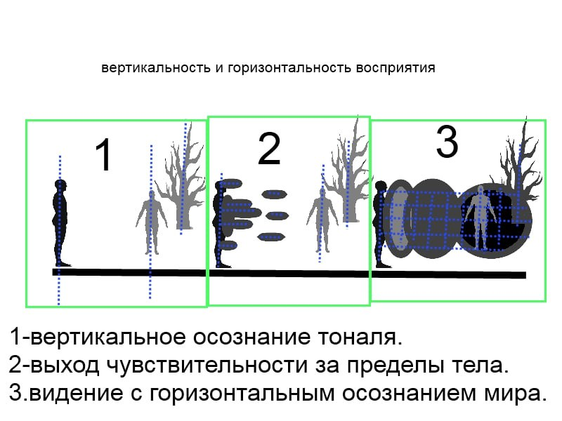
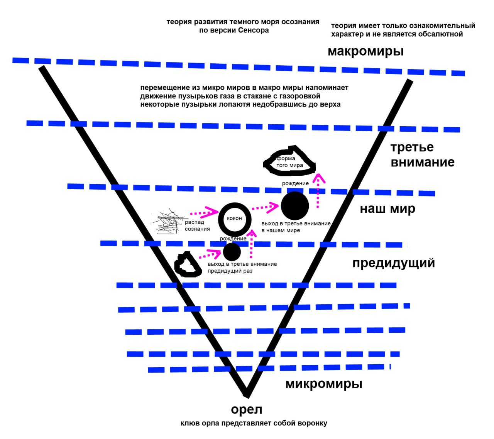
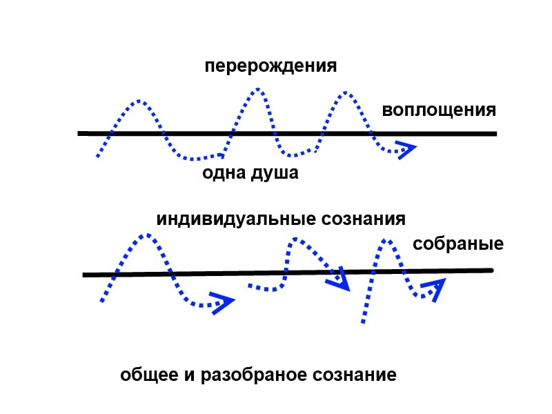